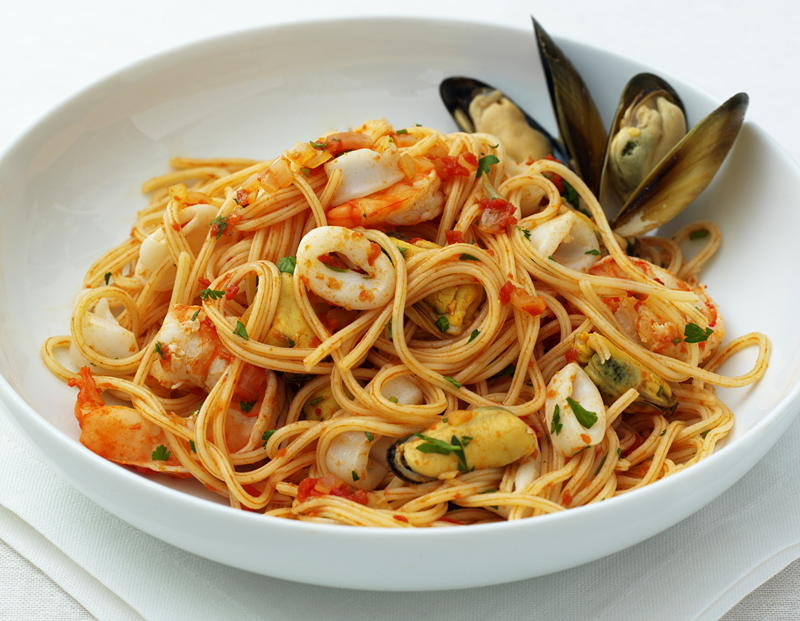

Pasta a Frutti di Mare

Description
This is the italian receipe of Frutti di Mare, you can make it everywere
in the world that you want.
Ingredients
- aglio
- vino bianco
- prezzemolo
- 100g Pomodorini
- olio extravergine di a
Steps
- Se pune in tigaie uleiul de masile si usturoiul pana se caleste usturoiul
- Se pun fructele de mare
- Se adauga rosiile mici si vinul alb
- Se adauga patrunjelul si se fierbe la foc mic